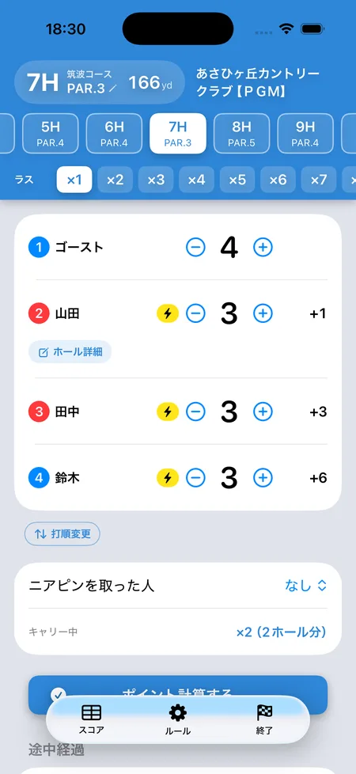

ゴルフ「ラスベガス」を3人でやる方法
SQORE編集部 ｜ 2026年8月14日更新
ラスベガスは2人1組×2チームで戦うゲームなので、3人ではそのままでは成立しません。1人欠席になった日のために、解決策を3通りまとめました。仲間内で一番よく使われるのは「ゴースト方式」です。あわせて、ゴーストのスコアの決め方4パターンと、決めておかないと揉めるポイントも整理します。
なぜ3人だと困るのか
ラスベガスは、ペアの2人の打数を並べて2桁の数字を作り、相手チームとの差を奪い合うゲームです。2人揃わないと数字が作れないため、3人だと1チームが1人になってしまいます。
たとえば4打と5打なら「45」。相手チームが5打と6打で「56」なら、その差の11ポイントが動きます。
方法① ゴースト方式（架空の4人目を立てる）
一番よく使われる方法です。「ゴースト」と呼ばれる架空の4人目を作り、3人のうち誰か1人と組ませます。ゴーストにも毎ホール打数を与えて、通常どおり2対2で戦います。
- いつもの4人ラスベガスとルールがまったく同じになるのが利点
- ゴーストの打数をどう決めるかだけ、事前に決めておく必要があります
ゴーストのスコアの決め方は4通り
ここが3人ラスベガスの肝です。どれを選ぶかで、勝負の荒れ方がまったく変わります。
| 決め方 | メリット | デメリット |
|---|---|---|
| ボギー固定 常にパー+1 |
数字が読めるので勝負が壊れにくい。進行が速く、揉める要素がない | 展開が単調になりやすい。ゴーストが一切ミスも好プレーもしないので、盛り上がりには欠ける |
| ダボ固定 常にパー+2 |
ゴーストのチームが確実に不利になるので、上手い人に付ければハンデ代わりになる | 組んだ人が一方的に損をする。相手を固定するなら、その人が納得しているかの確認が要る |
| 相方と同じ 組んだ人と同じ打数 |
相方の好プレーがそのまま2倍になる。実力が結果に出やすく、ドラマが生まれる | 毎ホールゾロ目になり単調。役物が2人ぶん発生して点が暴れる。相方の大叩きが即致命傷 |
| ホールごとに抽選 ルーレットなどで都度決める |
毎ホール何が出るか分からず盛り上がる。誰か1人が得をする構造にならない | 運の要素が最大。抽選のたびに進行が止まる。方法を決めておかないと揉める |
迷ったらボギー固定です。パー3なら4打、パー4なら5打、パー5なら6打。数字が読めるので勝負が壊れず、説明もいりません。実力差を埋めたいならダボ固定を上手い人に、とにかく盛り上げたいなら抽選、という選び方になります。
「相方と同じ」を選ぶときは、ここを決めておく
相方と同じ打数にすると、2人が必ず同じ数字になるので「44」「55」のようなゾロ目が毎ホール出ます。ラスベガスは2つの数字の並べ方で差がつくゲームなので、ゾロ目が続くと展開が単調になりがちです。
さらに深刻なのが役物の二重取りです。相方がバーディを取ると、ゴーストもバーディ扱いになり、バーディ倍が2人ぶん同時にかかります。ダブルパーでの反転も同じで、1ホールでポイントが跳ね上がります。
対策は「ゴーストの打数は数字としてだけ使い、役物は数えない」と決めておくことです。これだけで暴発が止まります。
どの方式でも残る問題：ゴーストは誰と組むか
ゴーストが強い設定（相方と同じ・ボギー固定）なら、組んだ人が得をします。弱い設定（ダボ固定）なら損をします。1人だけがずっとゴーストと組むと、18ホールぶん有利／不利が積み上がります。
打順でペアが決まる方式（1番と4番／2番と3番）にして、オナー順で毎ホール組み替わるようにしておけば、自然に均されます。
ゴーストは誰と組むか
打順で機械的に決めるのが公平です。ラスベガスの標準は「打順1番と4番」「2番と3番」のペアなので、ゴーストを打順のどこかに固定で入れてしまうのが簡単です。ホールごとにオナーが変わる方式なら、組む相手も自然に入れ替わります。
方法② 1人 対 2人でやる
架空の4人目を作らず、1人が残り全員を相手にする形です。仲間内では「プロ戦」と呼ばれることもあります。ゴーストという存在が要らないぶん納得感があり、実力差がはっきりしているメンバーには、むしろこちらのほうが向いています。
相手は「残り全員のベスト打数」
この方式の肝は、多数側の代表を1つの数字にまとめることです。標準的なのは残り全員のうち最も少ない打数（ベスト）を相手のスコアとする形。
たとえばPAR4で
1人側（Aさん）: 4打
多数側: Bさん5打 ／ Cさん4打 → 多数側の代表は4打
同じ4打なので引き分け。Aさんが3打なら勝ち、5打なら負けです。
勝敗が決まったら、1人側が勝てば相手全員から集め、負ければ相手全員に払います。相手が2人なら2人分、3人なら3人分が一度に動くので、1ホールの重みが大きくなります。
「ベスト打数」を相手にするのがポイントです。多数側は誰か1人がよいスコアを出せば勝てるので、1人側はかなり不利になります。だからこそ実力差を吸収する仕組みとして機能します。
ラス式にする場合
ラスベガスらしく2桁の数字で勝負したいなら、多数側のベストを10の位に置いて数字を作り、1人側と比べます。ただし1人側は1人しかいないので、数字をひっくり返す（反転）ことができません。バーディ反転などの役物を入れるなら、1人側は反転の代わりに倍率で表現するといった読み替えが要ります。
ここを詰めるのが面倒なら、2桁にせず「打数の少ないほうが勝ち」だけのシンプルな形にしてしまうほうが実用的です。
誰を1人側にするか
- 上手い人を1人側に固定 — 一番よくある形。実力差がそのままハンデになります
- 毎ホール交代 — 3人が均等に1人側を務めます。公平ですが、誰の番か確認する手間が増えます
- 前半・後半で交代 — 折衷案。9ホールごとなら管理が楽です
4人揃っていても使える
この方式は3人専用ではありません。4人のうち1人だけ明らかに上手いという日は、あえて1対3にすると噛み合います。2対2に分けると「上手い人と組んだチームが勝つだけ」になりがちですが、1対3なら実力差そのものが勝負の軸になります。
相手が3人になるぶん、1人側が勝ったときの取り分も3人分に増えます。
方法③ ローテーション方式
毎ホール、組み合わせを変えていく方法です。3人だと「AとB」「BとC」「CとA」の3通りしかないので、これを順番に回します。余った1人はそのホールを休むか、両チームに参加します。
- 3人が均等に組めるので公平感が高い
- 毎ホール誰と組むかを確認する必要があり、進行が煩雑になりがち
SQOREでの扱い
アプリのSQOREが対応しているのは方法①のゴースト方式（4通り）と方法②の1対多数です。
方法③の「3人でAB→BC→CAと組み替える」形には対応していません。SQOREにも「ローテーション」という設定はありますが、そちらは4人のときに3通りの組み合わせを巡回する別の機能です（1-2/3-4 → 1-3/2-4 → 1-4/2-3）。3人でローテーションをやる場合は、手で集計してください。
どれを選ぶか
| こういう時は | おすすめ |
|---|---|
| いつもどおりのラスベガスをやりたい | ゴースト方式（ボギー固定） |
| 架空の人が入るのが気持ち悪い | 1人 対 2人 |
| 3人のうち1人だけ明らかに上手い | 1人 対 2人（上手い人が1人側） |
| 4人いるが1人だけ突出している | 1人 対 3人。2対2より噛み合う |
| 公平さを最優先したい | ローテーション方式 |
| とにかく盛り上げたい | ゴースト方式（ホールごとに抽選） |
スタート前に決めておくこと
- ゴーストの打数の決め方（ボギー固定／ダボ固定／相方と同じ／抽選）
- ゴーストに役物を適用するか（バーディ倍・ダブルパー反転・カットなど）。数字だけ使って役物は数えない、が揉めにくい形です
- ゴーストが誰と組むか、固定か毎ホール入れ替えか
- ニアピン・ドラコンをゴーストが取ることはないので、その扱い（ドラコン・ニアピンのポイントをチームに加算する方式なら、ゴーストのチームが不利になりすぎないか）
アプリなら3人でもそのまま始められる
ゴーストの打数は自動で入る
iPhoneアプリのSQOREは3人ラスベガスに対応しています。メンバーを3人で登録するとゴーストが自動で追加され、打数も設定した方式で毎ホール自動的に入ります。手で管理する必要はありません。
画面はボギー固定の例で、PAR3のホールにゴーストの「4」が自動で入っています。ボギー／ダボ／ルーレット／相方と同じの4方式から選べ、相方と同じにした場合の役物の扱い（2人ぶん数えるか、数字だけか）も設定できます。
方法②の1対多数にも対応しています。「1対多数 ラスベガス」「1対多数 ホールベスト」を選ぶと、1人側 vs 残り全員のベスト打数で自動集計されます。

よくある質問
ラスベガスは3人でもできる？
できます。架空の4人目を立てる「ゴースト方式」が最も一般的で、ほかに1人対2人でやる方法、毎ホール組み替えるローテーション方式があります。
ゴーストのスコアはどう決める？
ボギー固定・ダボ固定・相方と同じ・ホールごとに抽選の4通りです。迷ったらボギー固定が扱いやすく、勝負も壊れにくくなります。
ゴーストがバーディを取ったら？
ボギー固定やダボ固定なら、そもそもバーディは起こりません。「相方と同じ」にしている場合は相方がバーディを取ると2人ぶんの役物が発生するので、役物を数えるかどうかを事前に決めておいてください。
1人 対 2人のとき、相手のスコアはどれを使う？
残り全員のうち最も少ない打数（ベスト）を相手のスコアとするのが標準です。多数側は誰か1人が良ければ勝てるので、1人側はかなり不利になります。上手い人を1人側に置くと、ちょうどよいハンデとして機能します。
3人でも4人でも、計算はおまかせ
SQOREはラスベガス・オリンピックなど定番ゲームのポイントを自動計算する無料アプリです。3人ラスベガスのゴーストにも対応しています。
ゲームをしない日はスコアアプリとしてそのまま使えます。いま打つホールの自分の平均スコアやOB率も出ます。
Download on theApp Store